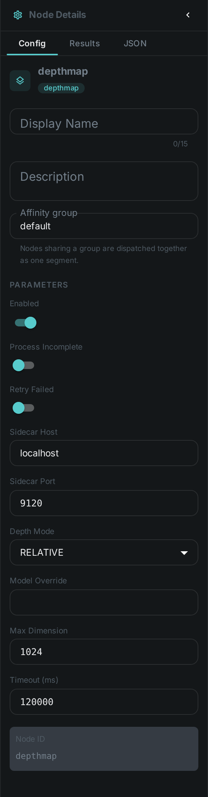
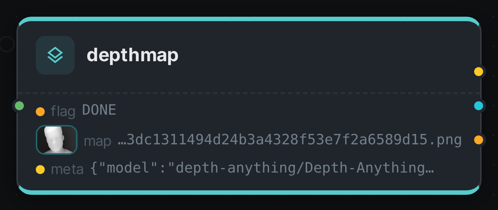
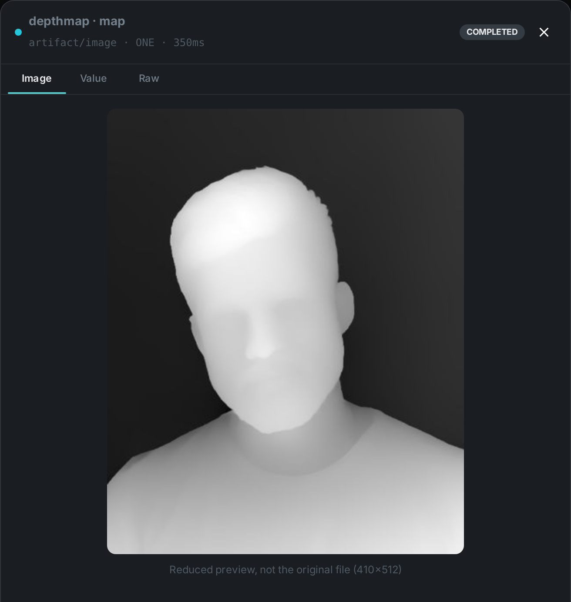

The depth map node works out how far each part of a photo is from the camera, from the photo alone. No stereo pair, no depth sensor, no camera metadata — a single image goes in, and a greyscale map comes out in which bright means close and dark means far.
That map is what turns a flat list of detected things into a scene you can reason about. On its own it powers depth-aware cropping, background separation and subject isolation; combined with Scene Layout it is what lets MetaLoom say a person is standing in front of a car rather than merely overlapping it in the frame.
The model runs behind a small HTTP sidecar, so the node stays a pure client and your worker needs no machine-learning runtime of its own.
Kind |
|
Applies to |
Images. Video is not supported yet |
Input ports |
|
Output ports |
|
Requirements |
A running depth sidecar ( |
Persists to |
The generated map stays on the worker under |
What it produces
A 16-bit greyscale PNG and a small JSON description of it:
{
"model": "depth-anything/Depth-Anything-V2-Small-hf",
"convention": "NEARNESS",
"source": "RELATIVE",
"width": 1024, "height": 683,
"imageWidth": 4000, "imageHeight": 2667,
"stats": { "p05": 0.11, "p50": 0.38, "p95": 0.82 },
"path": "/var/lib/cortex/depthmap_bin/ab12/<hash>.png"
}Reading the map
The one rule worth remembering: brighter is closer. The map stores nearness, not distance — white is right in front of the lens, black is the far background. Every model is normalised to that same convention before it reaches you, so a map is readable the same way regardless of which model produced it.
Two further details matter if you process the map yourself:
-
widthandheightdescribe the map, which is a scaled-down version of your image.imageWidthandimageHeightgive the original, so you can map coordinates between the two. -
Relative mode gives you reliable ordering — what is in front of what — but not distances. If you need actual metres, switch to metric mode and read
metric.min_m/metric.max_m.
Configuration

DepthmapNodeOptions:
| Option | Meaning |
|---|---|
|
Where the depth sidecar is listening. Defaults to |
|
|
|
Use a specific model instead of the sidecar’s default for the selected mode |
|
Longest side sent for analysis, default 1024. Lower is faster and coarser; this also sets the size of the produced map |
|
How long to wait for the sidecar, default 120000 |
Seeing it run
Turn on Debug Mode and every node keeps what it produced, on the
card itself. Below is a real run of this node over pexels-photo-2379005.jpeg, a portrait taken
against a wall — a subject with an obvious near thing and an obvious far thing behind it.

The map port carries an artifact, so the card shows it rather than its path: the head is bright
because bright means near. meta carries the model, the map’s dimensions and the quantiles a
consumer needs to read those greys; flag records how the node finished.

Requirements and models
The default model is Depth Anything V2 Small, published under Apache 2.0 and usable commercially. It is small enough to run on a CPU, though a GPU will process a large library far faster. Metric mode uses ZoeDepth (MIT), which is heavier and really does want a GPU.
|
Note
|
The larger Depth Anything V2 models are published under a non-commercial licence and are deliberately not the default. If you want higher quality with commercial terms intact, use a DPT / MiDaS model instead. See Model licences. |
Use Cases
-
Subject isolation — find the foreground automatically for cut-outs, blurred backgrounds or depth-aware crops that keep the subject.
-
Better automatic cropping — a crop that respects depth keeps the person and drops the wall, instead of cutting by rule of thirds and hoping.
-
Scene understanding — feed Scene Layout so captions and search can talk about what is in front of what.
-
Quality triage — flat depth across an entire frame is a good signal for a photograph of a screen, a document scan, or a flat-lay, which you may want routed differently.
Deployment note
The generated map is stored on the worker that produced it. If you connect meta to
Scene Layout, put both nodes in the same affinity group in your pipeline
so they run on the same machine — otherwise the second node cannot find the map the description
points at.